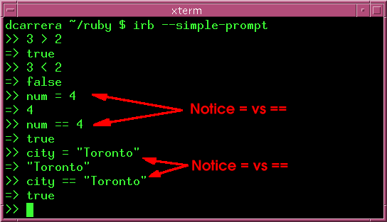
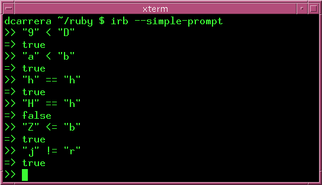
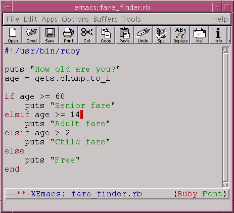
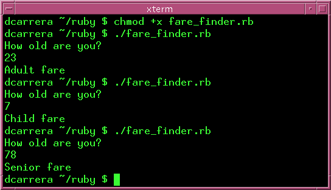

if statements allow you to take different actions depending on which conditions are met. For example:
if city == "Toronto" drinking_age = 19 else drinking_age = 21 end
This says:
Ruby has a notion of true and false. This is best illustrated through some example. Start irb and type the following:
The if statements evaluates whether the expression (e.g. 'city == "Toronto") is true or false and acts accordingly.
|
Warning:
Notice the difference between '=' and '=='. '=' is an assignment operator. '==' is a comparison operator. |
Here is a list of some of the most common conditionals:
| == | equal |
| != | not equal to |
| > | greater than |
| < | less than |
| >= | greater than or equal to |
| <= | less than or equal to |
How do these operators behave with strings? Well, == is string equality and > and friends are determined by ASCIIbetical order.
What is ASCIIbetical order? The ASCII character table contains all the characters in the keyboard. It lists them in this order:
...012...789...ABC...XYZ...abc...xyz...
Start irb and type these in:

| Note: Notice how irb can help make things clear. You should make a habit of trying things out in irb first. irb is a great tool, so use it! |
elsif allows you to add more than one condition. Take this for example:
if age >= 60
puts "Senior fare"
elsif age >= 14
puts "Adult fare"
elsif age > 2
puts "Child fare"
else
puts "Free"
end
Let's go through this:
Ruby goes through this sequence of conditions one by one. The first condition to hold gets executed. You can put as many elsif's as you like.
To make things more clear, let's put this in a program. The program asks for your age and gives you the corresponding fare.
Type this in and run it. It should behave like this:

| Warning: Be mindful of the order in which you put elsif's. Only the first condition that is true gets executed. This example demonstrates the danger: |
age = 21 if age > 5 puts "Older than 5" elsif age > 10 puts "Older than 10" elsif age > 20 puts "Older than 20" elsif age > 30 puts "Older than 30" end
This will output:
$ ./example.rb Older than 5 $
Here age is both greater than 10 and greater than 20. Only the first statement that holds true gets executed.
The correct way to write this would be:
if age > 30 puts "Older than 30" elsif age > 20 puts "Older than 20" elsif age > 10 puts "Older than 10" elsif age > 5 puts "Older than 5" end
Re-arrange these characters in ASCIIbetical order:
2, u, A, 4, w, f, R, y
The ASCII table contains all the characters in the keyboard. Use irb to find out wheter the characters "?" lies:
Using your experience the previous question, make a program that accepts a character input and tells you if the character lines:
Then try the program with the following characters:
$, +, ?, <, -, ~, :, %, ^, {, [
Sample answers: